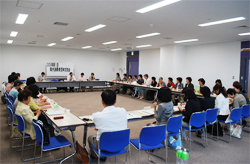

| ■ |
各団体の活動交流 |
 |
| ＜さいたま市消団連＞ |
| |
学習会｢どうなっているの？消費者行政一元化｣の開催を通じて、今後の消費者庁への動きに注目しています。 |
| ＜狭山市消団連＞ |
| |
一人当たりの消費者行政予算は多いようですが補助金は不十分。本日くらしの講演会を行い、成年後見制度について学習しています。 |
| ＜蓮田市消団連＞ |
| |
市からの補助金が団体ではなく活動に対しての支給となった。消費生活展向けの冊子も手作りしている。 |
| ＜所沢市消団連＞ |
| |
消費生活展と施設見学会の計画があります。 |
| ＜埼玉県西部地区消費者団体活動推進世話人会＞ |
| |
定例会では、各地域の団体の交流を活発に行っています。予算はなく各団体が負担しています。浄水場を見学予定。 |
| ＜桶川市くらしの会＞ |
| |
６人の会費で運営。消費生活展に向けての活動、広報掲載のための調査を行っています。 |
| ＜加須市くらしの会＞ |
| |
講座では｢第２の人生｣｢お葬式｣をとり上げる予定。料理講座で五家宝作りを行いました。 |
| ＜行田市くらしの会＞ |
| |
行田在来の青大豆で豆腐、味噌などを手作り。裁判員制度の学習会開催。 |
| ＜久喜市くらしの会＞ |
| |
宇宙環境センターと醤油工場の見学。消費者問題の学習会を行いました。 |
| ＜志木市くらしの会＞ |
| |
消費生活セミナーのほか、子ども消費者教室も開催予定。 |
| ＜白岡町くらしの会＞ |
| |
定例会やセミナー、料理、体操、視察研修等も行っているが、殆どが自費となっている。 |
| ＜めぬまくらしの会＞ |
| |
マイバッグ持参・レジ袋削減運動を実行。男女共同参画について研修会を開催。 |
| ＜ＮＰＯ法人埼玉消費者被害をなくす会＞ |
| |
活動委員会の調査活動をベースに、適格消費者団体として、専門家と一緒に申し入れ、差し止め請求等を行っています。資料の市町村消費者行政関連事業調査を10年行っています。 |
| ＊埼玉消団連・幹事団体は時間の関係から報告は行いませんでした。 |